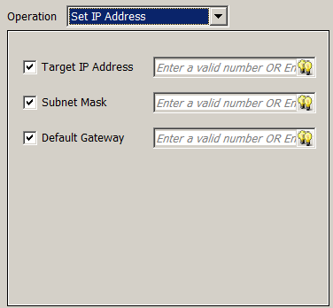
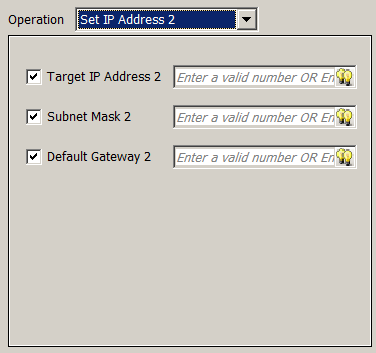

|
|
|
|
|
|
|
|
You can set up the Set IP Address operation for a single LAN network and for a dual LAN network. The Set IP Address 2 operation is not available for target machines that do not support the dual LAN network. For a list of targets, see Appendix 5, Hardware Specifications.

Windows-based target machines (such as iPCs and HMIG5U) do not support IP address change at run time and cannot run the Set IP Address operation.
Use the dialog box to enable the operator to change the network settings (Target IP Address, Subnet Mask, Default Gateway) at run time. For more information on the IP Address, Subnet Mask, and Default Gateway, see Section 26.3.1, Setting Up the Network.
The Set IP Address operation is supported in:
Target action
Panel action
Target Function Key (When Touch)
Panel Function Key (When Touch)
Switch (When Touch)
Selector
Decision Operation


The following table describes the network settings in the dialog box:
Property |
Description |
Target IP Address / Target IP Address 2 |
When selected, the target's IP address can be changed at run time. Enter a constant value in the IP address format, string variable, or expression. |
Subnet Mask / Subnet Mask 2 |
When selected, the subnet mask can be changed at run time. Enter a constant value in the IP address format, string variable, or expression. |
Default Gateway / Default Gateway 2 |
When selected, the default gateway can be changed at run time. Enter a constant value in the IP address format, string variable, or expression. |
To create a Set IP Address operation:
Make sure the project in which you are creating the Set IP Address operation is using a target machine type that supports Ethernet and this feature, and check whether it supports a single LAN port or dual LAN ports. For a list of targets, see Appendix 5, Hardware Specifications.
In the Target properties, select the Set IP Address at Run Time check box to enable the feature.
Create an action with a Set IP Address operation. You can customize the action to be triggered by a conditional trigger and use the Interlock feature to control the frequency of the operation. For more information on actions, see Section 9.4, Creating Actions.
In the Set IP Address operation's dialog box, select one or more network settings (Target IP Address, Subnet Mask, Default Gateway) that you want to change at run time.
In the corresponding IP Address fields, enter a constant value in the IP address format, string variable, or expression.
Click Add, and close the dialog box.